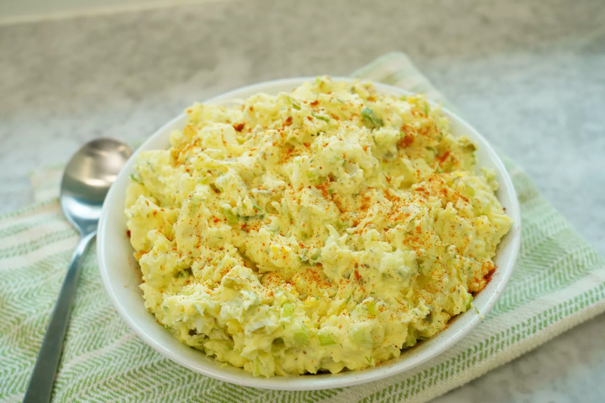

Best Classic Potato Salad

This is the best potato salad
Creamy, tangy, and crunchy, with a hint of spice and sweetness from pickles, this reminds me of my grandmother's potato salad served every Easter or any time we had barbecue. She always dotted it with olives for a finishing touch and a perfect briny addition. This is the best classic version of good old-fashioned, Southern-style potato salad. Not too mayonaissey with just the right amount of tang! Serve with grilled or smoked meats as the perfect side dish.
Ingredients:
- 5 pounds russet potatoes, peeled
- 4 teaspoons kosher salt, divided, or to taste
- 4 large eggs
- 1 cup mayonnaise
- 1/3 cup sour cream
- 3 tablespoons yellow mustard
- 5 stalks green onions, sliced (white and green parts)
- 2 stalks celery, finely chopped
- 1 tablespoon chopped fresh dill
- 1/2 cup chopped spicy sweet dill pickles (such as Wickles™), plus 2 teaspoons pickle juice
- 3/4 teaspoon ground black pepper
- 1/4 teaspoon ground paprika
- 1/4 cup sliced green olives with pimientos
Steps:
- Cut potatoes into 1 1/2-inch pieces. Place in a large pot and add water to cover by 2 inches. Add 3 teaspoons salt and eggs; bring to a boil over medium-high heat.
- Reduce heat and simmer 9 minutes. Remove eggs to an ice bath. Drain potatoes when fork-tender; they may need another minute or so.
- Peel and chop eggs and set aside.
- Combine mayonnaise, sour cream, mustard, onions, celery, dill, pickles, juice and pepper in a large bowl; stir to combine. Stir in potatoes and eggs until well blended, mashing potatoes very slightly. Check for seasoning and add up to 1 teaspoon salt if desired.
- Transfer to a serving bowl, sprinkle with paprika, and garnish with olives. Cover and refrigerate at least 2 hours or overnight.